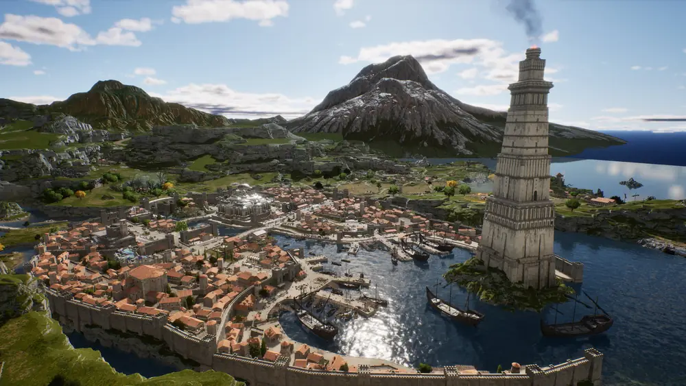
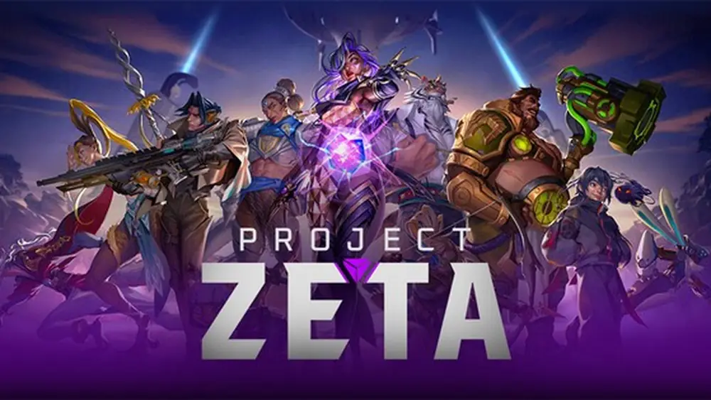
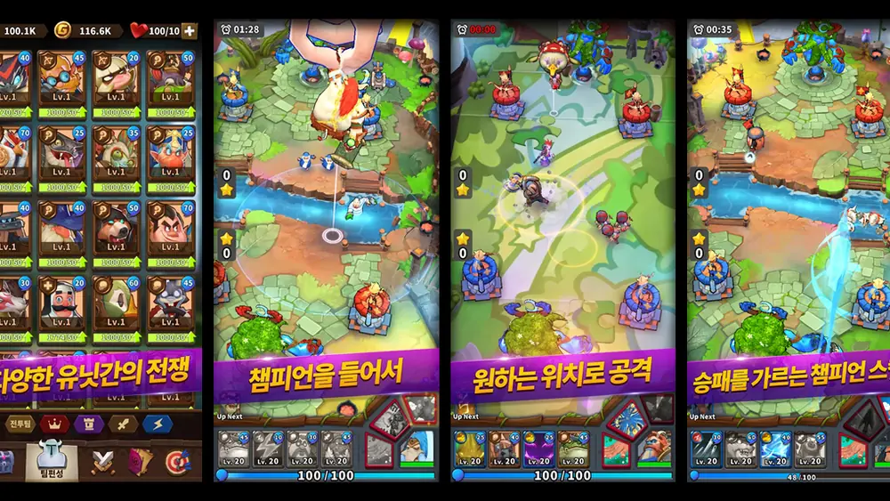
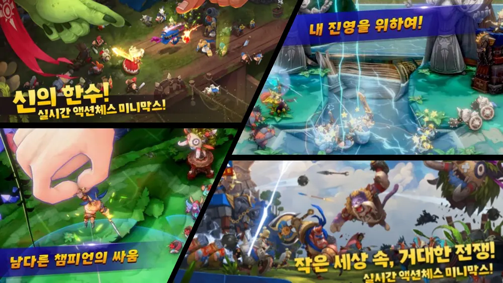
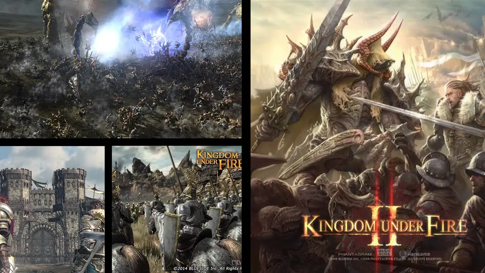
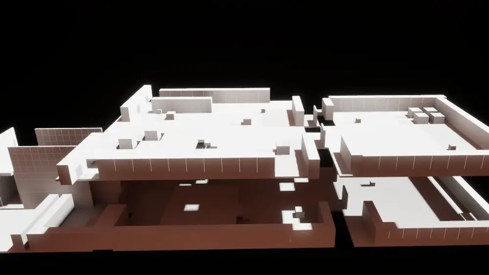

Summary
이렇게 일해왔습니다
10년 넘게 6개 프로젝트에서 레벨디자인을 해왔고, 그 사이 시나리오 · 퀘스트 · 시스템 · BM · 운영까지 맡아봤습니다. 하이컨셉 단계부터 글로벌 출시와 라이브 서비스, 그리고 서비스 종료까지 개발 주기 전체를 겪었습니다.
AI를 실무 파이프라인에 넣었습니다
평면도 제작 툴을 직접 만들어 언리얼 LLM 플러그인 Aura와 연결했습니다 (목업 제작 시간 31% 절감). Meshy AI로 뽑은 메시를 밑그림 삼는 방식으로는 목업 제작 효율을 50% 이상 올렸습니다. 팀 공용 도구와 MCP 서버까지 만들어 확산했습니다.
레벨과, 그 레벨이 돌아갈 시스템까지 함께 만듭니다
평면도와 레벨 기획서에서 시작해 목업 · 화이트박스 검증 · 배경팀 전달까지 한 지역을 끝까지 따라갑니다. 거기서 멈추지 않고 이동 규칙 · 레벨 기믹 · 가젯 · 전투 연출처럼 그 공간에 필요한 시스템을 직접 사양으로 써서 구현 범위까지 확정합니다.
지금도 글을 쓰는 작가입니다
영화를 전공하고 시나리오 작가로 일했고, 지금도 오디오드라마를 쓰며 작품 활동을 이어가고 있습니다. 영상 연출을 배운 사람이라 연출이 강하게 들어가는 레벨 — 등장 연출, 시선 유도, 컷신과 공간이 맞물리는 구간 — 을 설계하는 데 특화돼 있습니다.
게임 하나를 혼자 기획해봤습니다
나노레전드에서 팀 내 유일한 기획자로 전투를 제외한 전 영역을 전담했습니다. 아웃게임 · BM · 경제 밸런싱 · 운영까지, 게임이 돌아가는 축을 모두 만져봤습니다.
Projects
참여한 6개 프로젝트
카드를 누르면 프로젝트별 상세 문서로 들어갑니다. 대표 프로젝트인 왕좌의 게임: 킹스로드는 지역·던전 10종의 작업 과정을 따로 정리해 두었습니다.

출시 · 라이브대표 프로젝트
왕좌의 게임: 킹스로드
필드·던전 레벨디자인 / 레벨 시스템·기믹 기획
프로토타입 직후 합류해 글로벌 출시와 라이브 서비스까지 같은 프로젝트를 이어오고 있습니다. 필드 지역 5곳과 던전 5종의 평면도 · 레벨 기획서 · 목업을 담당했습니다.

출시 · 크래프톤 퍼블리싱Project ZETA
콘텐츠 기획팀 / 하이컨셉 기초 기획
하이컨셉 단계부터 참여해 기초 룰 · 세계관 · 월드 · 캐릭터 · 핵심 시스템 · 캠페인의 기초 기획을 진행했습니다. 이후 크래프톤 퍼블리싱으로 출시됐습니다.

출시 · 서비스 종료나노레전드
팀 내 유일한 기획자 / 전투 제외 전 기획
클래시 로얄에 ‘영웅’ 개념을 접목한 모바일 RTS. 프로토타입부터 서비스 종료까지 전투를 제외한 모든 기획과 글로벌 퍼블리싱·운영을 전담했습니다.

출시 · 서비스 종료미니막스 타이니버스
아웃게임 기획 전담 / BM · 성장 · 경제 밸런싱
레밍즈처럼 앞으로만 이동하는 유닛을 기믹으로 조종해 싸우는 PvP 전략 게임. 아웃게임 기획 전반과 BM·경제 밸런싱을 맡았습니다.
Project KUFC
콘텐츠 파트장 / 콘텐츠 기획 총괄 · 레벨디자인
킹덤언더파이어 IP의 콘솔 신작. 콘텐츠 파트장으로 전체 콘텐츠 플로우를 총괄하고 실무로는 레벨디자인을 중점적으로 맡았습니다.

출시 · 글로벌 6개국Kingdom Under Fire 2
시나리오 파트 1.5년 → 레벨디자인 파트 3년 / 엔드 콘텐츠
MMORPG와 RTS를 결합한 하이브리드 대작. 최대 규모 레이드와 최고 인기 PvP 맵, 퀘스트 약 300개와 대화형 컷신을 제작했습니다.
R&D
목업 제작을 파이프라인으로 만들었습니다

Personal Works
회사 밖에서 만든 것들
시킨 사람이 없어도 만듭니다. 개인 제작 프로젝트와 함께, 지난 프로젝트의 기획 문서 5편과 플레이 영상 21편을 자료실에 모아 뒀습니다.

스타크래프트 캠페인 3D 리디자인
원작 캠페인 미션을 3D 공간으로 다시 설계한 개인 프로젝트. 평면 RTS 미션을 3인칭 시점의 공간으로 옮기면 무엇이 달라지는지를 목업으로 검증하고, 기획서와 브리핑 영상으로 정리했습니다.

범용성 있는 RPG 던전 목업 제작 과정
특정 프로젝트에 묶이지 않는 범용 RPG 던전을 기준으로, 목업을 어떤 순서로 세우고 무엇을 먼저 확정하는지 제작 과정 자체를 정리한 작업입니다.
캐시아웃
크래시(그래프) 게임을 소재로 한 인디게임. 기획부터 개발까지 혼자 진행했고, 구현은 Claude로 했습니다. 브라우저에서 바로 플레이할 수 있습니다.
Career
경력 · 학력
왕좌의 게임: 킹스로드
- 프로토타입 직후 합류해 글로벌 출시와 라이브 서비스까지 참여
- 필드 지역 5곳 · 던전 5종의 평면도 · 레벨 기획서 · 목업 담당
- 레벨 기믹 · 가젯 · 이동 규칙 등 레벨에 필요한 시스템을 직접 기획
- AI 목업 파이프라인을 구축하고 팀에 확산
Project ZETA
- 하이컨셉 단계부터 참여해 기초 룰 · 세계관 · 월드 · 캐릭터 · 핵심 시스템 · 캠페인 기초 기획
나노레전드 · 미니막스 타이니버스
- 나노레전드 (2020.04–2022.04) — 팀 내 유일한 기획자로 전투를 제외한 전 기획 전담 (시나리오 · PvE · 시스템 · BM · 밸런싱 · 운영)
- 미니막스 타이니버스 (2019.06–2020.04) — 아웃게임 · BM · 경제 밸런싱 전담
- 두 작품 모두 자체 글로벌 퍼블리싱 및 운영까지 수행
Project KUFC · Kingdom Under Fire 2
- Project KUFC (2018.06–2019.03) — 콘텐츠 파트장으로 콘텐츠 기획 총괄, 실무는 레벨디자인 중심
- Kingdom Under Fire 2 (2014.02–2018.06) — 레벨디자인 · 퀘스트 기획, 글로벌 6개국 서비스
이우고등학교 (2003.09 – 2006.03)
중국어 — 기초 수준 (읽기)
업계 외 경력
Skills & Tools
다루는 것
Unity — 나노레전드 · 미니막스 타이니버스 (모바일·PC RTS 2종, 출시까지)
Contact
좋은 인연이 되길 바랍니다
일이 많거나 처우가 열악한 것은 두렵지 않습니다. 방향성이 분명하고 철학이 있는 게임을 만들고 싶습니다.
목표하는 유저 경험이 확고하시다면, 제가 그 경험을 구체화하겠습니다.